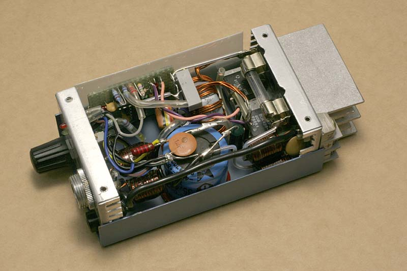
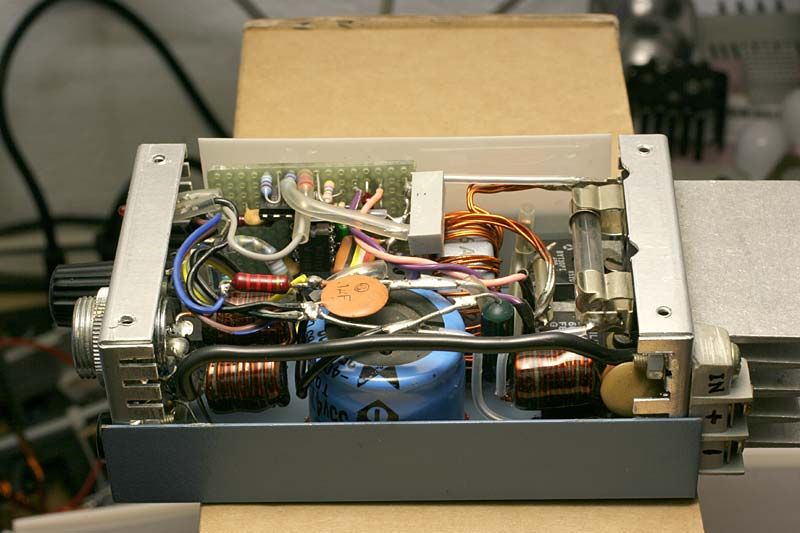
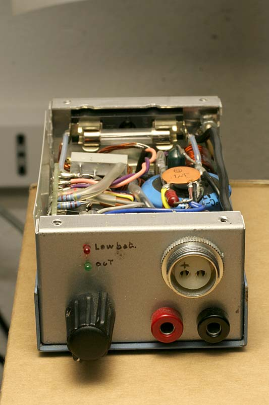
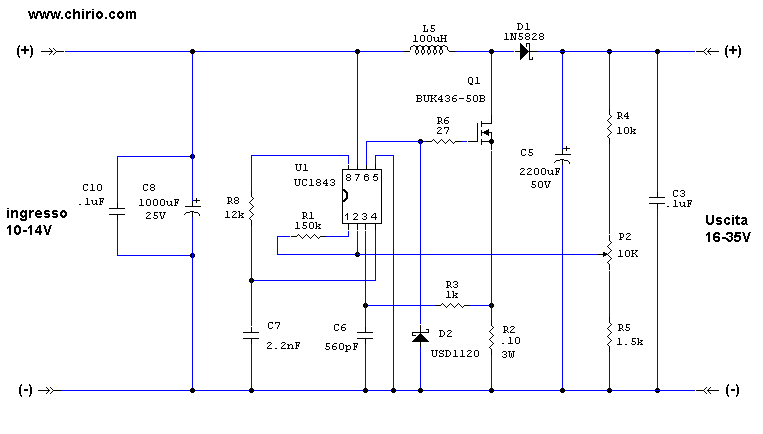

Alimentatori
POWER SUPPLY SWITCHING STEP-UP
DC-DC in: 9-14V out: 12-18V max 10A "Fai da te" di R.Chirio
Indice della pagina

Febbraio 2007
Questo alimentatore DC-DC è un mio progetto del 1989, è comunque ancora attuale e serve per innalzare la tensione di batteria 12v e stabilizzare l'uscita compensando la caduta di tensione batteria durante la scarica. Potendo raggiungere 15V-16V è indicato per ottenere le massime prestazioni dagli apparati radiotrasmittenti. Inoltre con la tensione di uscita a 18V può alimentare i Notebook dalla tensione di batteria auto.
Sono presenti filtri sull'ingresso e sull'uscita per evitare interferenze da e verso gli apparecchi radio.
La tensione di ingresso deve essere tra 9,0 e 14,9V e la tensione in uscita è regolabile da 14,0-18,0V Quando l'ingresso è 14,0V la massima corrente in uscita può raggiungere i 10A (5-10min senza ventilatore). La tensione in uscita è regolabile tramite potenziometro da un valore minimo di 12-14 V fino a un massimo di 18V.
Non è presente una limitazione di carico sull'uscita, (prestare attenzione) c'è solo controllo della massima corrente che attraversa il MosFet. Il fusibile da 16A tipo T protegge dal sovraccarico e dal corto circuito l'uscita.
Le migliori prestazioni si ottengono con 12-14V. Sotto 11,00Volt subentra una segnalazione di battery-low, per evitare di scaricare completamente la batteria.
E' stato scelto questo regolatore in quanto inizia a funzionare a 8,4V e si ferma a 7,6V. Perfetto quindi per un impiego con batterie 12V.
La frequenza di lavoro, viene determinata:
f=1.72/(R8 C6)
{kind=link}
Questo alimentatore DC-DC come lo si vede nella foto può raggiungere i 7A in uscita in servizio costante e 10A per pochi minuti. Se si prevede di usarlo con correnti massime è necessario un piccolo ventilatore per raffreddare la parte di potenza composta da Mosfet, diodo Schottky, induttore e condensatore elettrolitico.
Semplificazione:
A chi non interessa la segnalazione battery-low basta togliere il circuito del LM358, sono anche eliminabili i 4 induttori/condensatori sull'ingresso e uscita, nel caso non vengano utilizzati apparati radio.
SCHEMA ELETTRICO
{kind=link}
|
Materiale |
Dove |
|
|---|---|---|
|
IC1 |
● 1 integrato UC1843 (3843) UNITRODE |
negozio elettronica |
|
IC2 |
● 1 integrato LM358 |
negozio elettronica |
|
Q1 |
● 1 MOSFET tipo BUK 436-50A o equivalente da 50V 50A |
negozio elettronica |
|
U1-4 |
● morsettiera ingresso e uscita (tipo da 16A) |
negozio elettronica |
|
● 1 basetta mille-fori vetronite con piazzole stagnate |
negozio elettronica |
|
|
S1 |
● 1 interruttore a levetta da 16A (opzionale) |
negozio elettronica |
|
R1 |
● 1 resistenza 150K ohm 1/4W |
negozio elettronica |
|
R2/14 |
● 1 resistenza 0,1 ohm 2W 5% filo |
negozio elettronica |
|
R3 |
● 1 resistenza 1K ohm 1/4W 5% |
negozio elettronica |
|
R4 |
● 1 resistenza 10K ohm 1/4W 1% strato metallico |
negozio elettronica |
|
R5 |
● 1 resistenza 4.7K ohm 1/4W 1% strato metallico |
negozio elettronica |
|
R6 |
● 1 resistenza 27 ohm 1/4W 5% |
negozio elettronica |
|
R7 |
● 1 resistenza 10K ohm 1/4W 5% |
negozio elettronica |
|
R8 |
● 1 resistenza 12K ohm 1/4W 5% |
negozio elettronica |
|
R9 |
● 1 resistenza 4.7M ohm 1/4W 5% |
negozio elettronica |
|
R10 |
● 1 resistenza 4.7K ohm 1/4W 1% strato metallico |
negozio elettronica |
|
R11 |
● 1 resistenza 4.7K ohm 1/4W 1% strato metallico |
negozio elettronica |
|
R12 |
● 1 resistenza 1,5K ohm 1/4W 5% |
negozio elettronica |
|
R11 |
● 1 resistenza 1,5K ohm 1/4W 5% |
negozio elettronica |
|
C1-C4 |
● 1 condensatore ceramico 0,1uF 100V |
negozio elettronica |
|
C5 |
● 1 condensatore elettrolitico 4700uF 35V per switching |
negozio elettronica |
|
C6 |
● 1 condensatore 560 pF 100V poliestere |
negozio elettronica |
|
C7 |
● 1 condensatore 2.2 nF 100V poliestere |
negozio elettronica |
|
C8 |
● 1 condensatore elettrolitico 2200uF 25V per switching |
negozio elettronica |
|
C9 |
● 1 condensatore ceramico 0,1uF 100V |
negozio elettronica |
|
C10 |
● 1 condensatore ceramico 0,1uF 100V |
negozio elettronica |
|
C11 |
● 1 condensatore ceramico 0,1uF 100V |
negozio elettronica |
|
D1 |
● 1 diodo 1N5834 oppure diodo tipo Schottky da 60 A 40V |
negozio elettronica |
|
D2 |
● 1 diodo Schottky USD1120 |
negozio elettronica |
|
L1/L4 |
● 4 bobina filtro 10 spire diam 1,5 su ferrite diam 10mm. |
da farsi |
|
L5 |
● 1 induttore 60uH 18 spire 0,75 x 4 su nucleo L6A-55925-A (MAGNETICS) |
negozio elettronica da bobinare a mano |
|
P1 |
● 1 trimmer cermet 15 giri 10Kohm |
negozio elettronica |
|
P2 |
● 1 potenziometro cermet 10Kohm |
negozio elettronica |
|
LED1 |
● 1 led rosso 3mm |
negozio elettronica |
|
LED2 |
● 1 led verde 3mm |
negozio elettronica |
|
Buzz |
● 1 buzzer 12V con oscillatore incorporato (opzionale) |
negozio elettronica |
|
● 1 contenitore alluminio |
negozio elettronica |
|
|
● radiatore alluminio alettato |
negozio elettronica |
|
Realizzazione
La realizzazione dello Switching Power Supply comporta avere delle conoscenze di elettronica, è necessaria un'attrezzatura ed esperienza nei montaggi elettronici.
Non si risponde per danni a cose e persone e per un uso improprio della realizzazione.

Ecco come si presenta il prototipo montato dentro la scatola metallica, è possibile realizzare un circuito stampato per meglio disporre i componenti e facilitare il montaggio, si nota il grosso condensatore elettrolitico incollato sul fondo. Le bobine di filtro sono direttamente saldate sui connettori di ingresso e uscita.
Il MosFet e il Diodo Schottky sono fissati con vite da 3mm sul radiatore, per entrambi è necessario mettere il foglio isolante sotto dal lato metallico per evitare conduzione elettrica sul radiatore di alluminio.
Il portafusibile viene fissato con una vite da 3mm sul pannello posteriore, oppure più facile usare un portafuse volante, tipo auto da saldare sul cavo di alimentazione batteria, i cavi alimentazione devono essere da almeno 4mmq di colore rosso e nero. Lunghezza massima di 1,5mt.
Induttore L5
L'avvolgimento è composta da 18 spire di filo di rame smaltato per un totale di 4 fili diametro 0,75 su nucleo L6A-55925-A. (MAGNETICS)
Disporre l'avvolgimento su tutta la circonferenza del toroide, spelare e saldare assieme i terminali di inizio e fine avvolgimento.
L'induttanza presenta un valore di 60uH, durante il funzionamento a corrente oltre 6A tende a scaldare parecchio, se non viene ventilata è bene realizzare l'avvolgimento con 7 fili rame diametro 0,75.
L'induttore viene saldato in maniera robusta da una parte al terminale del portafusibile e dall'altra al Drain del Mosfet. Per fissarlo al fondo della scatola si può usare silicone. E' bene tenerlo lontano da parti metalliche per evitare perdite per correnti indotte disperse.
Induttore L1-L4
Tali bobine servono per bloccare i disturbi di commutazione dello switching verso i cavi di alimentazione. Tali disturbi si possono sentire in certi apparati radio ricetrasmittenti e su certe frequenze.
Sono realizzati con 10 spire di rame diam. 1,5-1,8 su ferrite di diametro 8-10mm, l'avvolgimento è bloccato con resina epossidica, al posto è possibile usare le bobine di blocco presenti all'uscita degli alimentatori ATX.
Le bobine e relativi condensatori sono efficaci anche per bloccare la radiofrequenza che potrebbe disturbare il regolatore 1843.
Forme d'onda
Forma d'onda rilevata con sonda 10X tra il Gate e il negativo comune.
Tensione ingresso 12,50V tensione uscita 18,00 V carico 20ohm
{kind=link}
Forma d'onda rilevata con sonda 10X tra il Drain e il negativo comune.
Tensione ingresso 12,50V tensione uscita 18,00 V carico 20ohm
{kind=link}
Taratura
Collegare un alimentatore variabile all'ingresso e salire di tensione fino a 12V, dovremmo avere il circuito funzionante, regolare il P2 per fare variare la tensione in uscita.
Collegare un carico di almeno 3A e provare a fare l'escursione di tensione uscita che deve arrivare fino a 18V.
Il trimmer P1 serve a tarare la soglia di segnalazione di batteria scarica, scendere di tensione fino a 11,0 Volt e girare il trimmer per fare accendere il led e il cicalino (se usato).
Prova a carico, batteria 12V 36A/h
Valori letti:
● ingresso Vb 11,65V Ib 7,88A
● Uscita Vout 17,00V Iout 5,00A
rendimento: 0,92 (valore molto buono, migliorabile eliminando i 4 induttori per chi non usa radio)

Versione ridotta 5A 18V out
Marzo 2009
Con questa versione ridotta ho voluto soddisfare le richieste di chi ha necessità di alimentare il notebook dalla batteria dell'auto a 12V. Abbiamo in uscita 5A e una tensione di 18V adatta quindi ad alimentare la maggior parte dei PC portatili. Con il trimmer, la tensione è comunque regolabile da 16 a 35V.
Inoltre dallo schema sono stati tolti i filtri RF e il circuito segnalatore di batteria bassa.
Il circuito è semplice, si sono ridotte le dimensioni dei condensatori elettrolitici, come pure l'induttore. Anche per la dissipazione è sufficiente un piccolo radiatore in alluminio.
{kind=link}
SCHEMA ELETTRICO

© Roberto Chirio: all rights reserved.